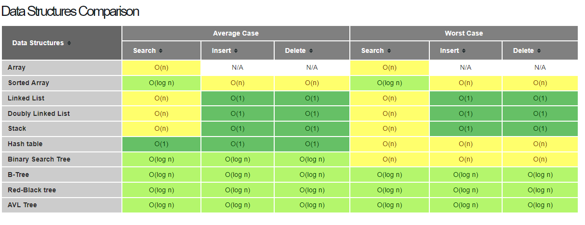
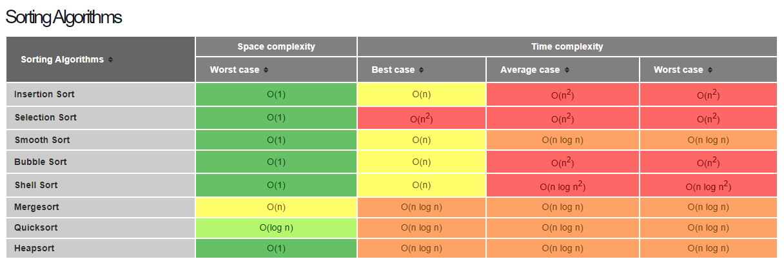
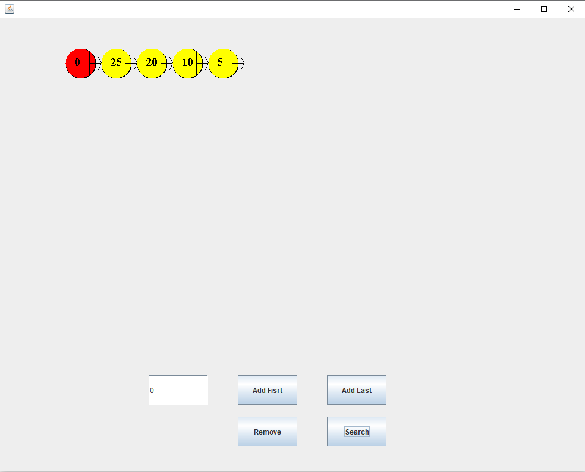
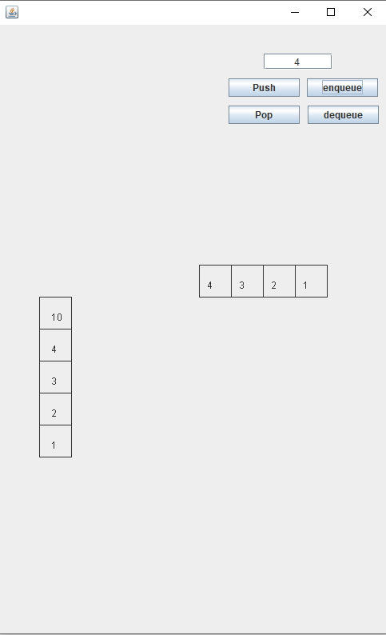
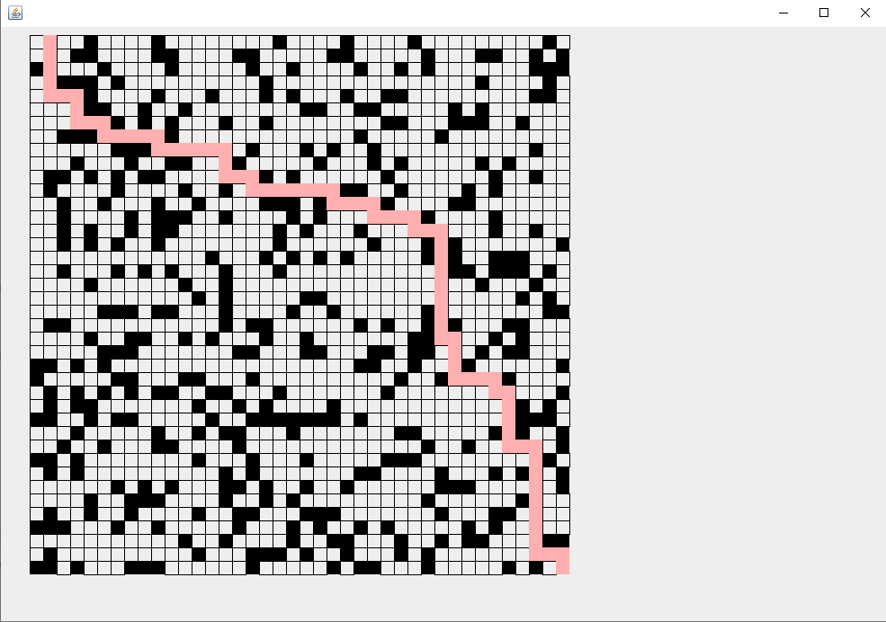
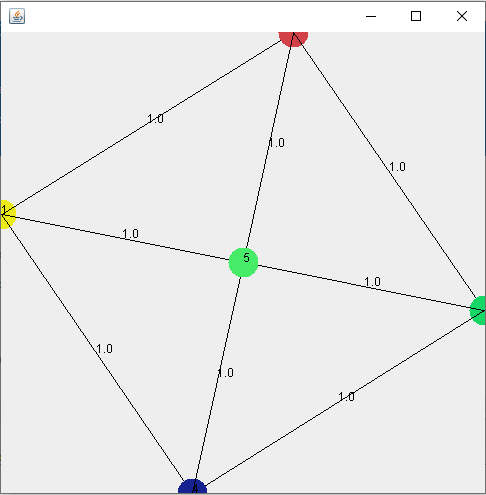
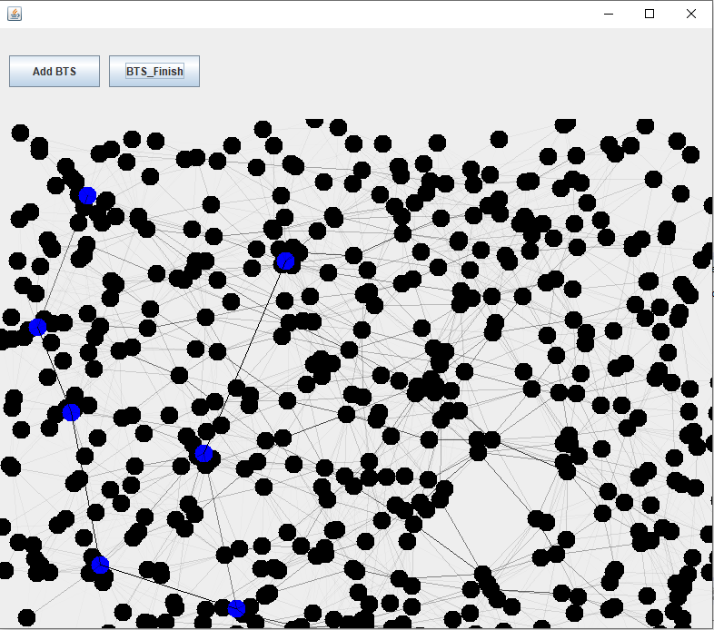
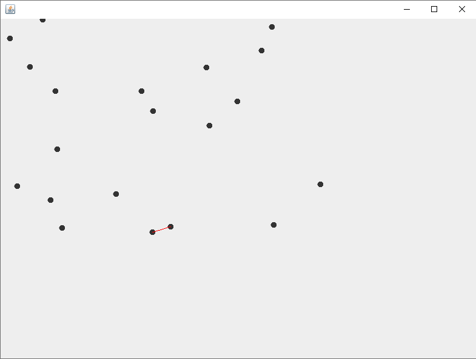

Data structure & Algorithms
ได้รู้จักกับ Common Data structure ที่ใช้กันทั่วไปและใช้งานเพื่อจะได้นำไปใช้ได้อย่างถูกต้องตามตาราง Big O ด้านล่าง
รวมถึง Algorithms ของการจัดลำดับเพื่อนำไปปรับใช้กับปัญหาอื่นๆในภายหลังไม่ว่าจะเป็น การแก้ปัญหาแบบ Polynomial time ได้แก่ Dynamic programming, Divide & Conquer และ Greedy ด้านล่างจะเป็นตาราง Sorting Big O ดังนี้
และแบบ Non Polynomial time ซึ่งใช้วิธีแก้ปัญหาได้แก่ State Space Search, Depth First Search, Breadth First Search และ Backtracking เนื่องจากถ้าเป็นปัญหาที่ซับซ้อนอาจจะต้องยอมเสียเวลาเพื่อแก้ไข
Workshop
Singly Linked List
รูปด้านบนคือการทดลองเขียน Singly Linked List ขึ้นมาเองไม่ได้ใช้แบบมาตรฐานและเขียน GUI เพื่อแสดงการทำงานของ Linked List เพื่อให้เห็นภาพและเข้าใจง่ายขึ้น จะเห็นได้ว่าการ add first และ add last นั้น Big O จะเป็น O(1) ส่วนการค้นหาจะเป็น O(n)
Stack And Queue
ทดลองเขียน Stack และ Queue โดยให้แสดงผลออกมาในแบบ GUI โดยจะเห็นได้ว่า Stack นั้นจะทำงานแตกต่างจาก Queue เล็กน้อย ซึ่งการทำงานของ Stack นั้นจะเป็นเข้าก่อนออกก่อน หรือ First In Last Out แต่ Queue จะเป็นเข้าก่อนออกก่อน First In First Out
Shortest Path by DijtraAlgorithmns
ในรูปด้านบนคือการทดสอบสร้างเขาวงกคขนาด 40*40 ขึ้นมาและใช้ Algorithms Shortest Path ของ Dijtra กับ Queue ในการแก้เขาวงกตเพื่อหาเส้นทางที่สั้นที่สุด ซึ่งด้านในจะมีคลาส GUI ด้านในจะมี Method อ่านไฟล์ .TXT เพื่อสร้างเขาวงกตถ้าเป็นช่องสีดำจะไม่สามารถผ่านได้ เมื่อสร้างเสร็จก็จะไปเรียกคลาส MazeSolver เพื่อแก้เขาวงกตโดยใช้ Queue วิธีการคือใช้การวนลูปจนกว่า Queue จะว่างหรือสามารถไปถึงจุดที่ต้องการได้แล้ว เส้นทางไหนถึงก่อนจะหยุดการทำงานและย้อนรอยกลับไปเพื่อแสดงเส้นทางที่สั้นที่สุด ซึ่งผลลัพธิ์ก็จะออกมาดังภาพที่ปรากฏด้านบนเป็นอันจบการทำงาน
Binary Search Tree

รูปด้านบนจะแสดงโครงสร้างของ Binary Search Tree จะสังเกตได้ว่าแต่ละ Node นั้นจะมี ลูกได้ไม่เกิน 2 Node เท่านั้น จะเห็นว่าการเก็บข้อมูลในแต่ละ Node นั้นจะมีด้านซ้ายและขวาโดยที่ค่าน้อยกว่าจะเก็บด้านซ้าย กลับกันถ้าค่าเยอะกว่าจะเก็บไว้ที่ด้านขวา ตัวอย่างเช่น add ค่า 10 เข้าไปค่าแรกซึ่งจะเป็น root ของ BTS และต่อมาก็ทำการ add ค่า 20 เข้าไปจะไปอยู่ที่ด้านขวาของ Node 10 นั้นเอง ส่วนลูกศรที่ปรากฏอยู่คือ การนำค่าทั้งหมดใน BTS มาแสดงให้ดูผ่าน Method pre-order, in-order และ post-order นั้นเอง ซึ่งค่าที่ออกมานั้นจะแตกต่างกันที่ลำดับ เช่นถ้าใช้ pre-order ในการแสดงข้อมูลใน BTS ออกมาดูจะได้ตามลูกศรลง ข้อมูลที่ได้คือ 10, 5, 20, 13, 11, 15, 58, 92, 80, 99
Graph
ในรูปคือ Graph ถือเป็นอีกหนึ่ง Data structure ที่นิยมใช้เก็บข้อมูลกัน ซึ่ง Graph ในภาพนั้นคือ Complete Graph เนื่องจากไม่มี Edge ไหนทับกันเลย สามารถนำไปใช้แก้ปัญหาได้ยกตัวอย่างเช่น ปัญหาการเดินสายโทรศัพท์ หรือ สายไฟ ให้ใช้สายน้อยสุดแต่สามารถเชื่อมต่อกันได้หมดเป็นต้น
Traffic Simulator
ในภาพคือการจำลองการจราจรในกรุงเทพ โดยมี Node สีดำแทนจำนวนประชากร เส้นสีดำ หรือ Edge แทนจำนวนการเดินทางของประชากรยิงสีเข้มมากเท่าไรก็จะยิ่งติดขัด และใช้ร่วมกับ Shortest path ของ DijtraAlgorithmns ซึ่งในการจำลองนั้นประชากรจะเลือกทางที่เร็วที่สุดในการเดินทางเสมอ ในภาพจะเห็น Node สีน้ำเงินแทน BTS หรือรถไฟฟ้า จากการทดลองนั้นได้ลองใส่ไปตามที่มีประชากรแออัด จะสามารถลดการติดขัดของจราจรได้มากเพราะประชากรจะหันมาใช้ BTS แทนการเดินทางแบบปกติ สังเกตได้จากค่า alphas ของ Edge ปกตินั้นน้อยลงหรือ เส้น Edge ดูจางลงนั้นเอง
ClosetPairPoint
ในภาพการหาจุด 2 จุดที่อยู่ใกล้กันมากที่สุดโดยจะมีเส้นสีแดงลากผ่านระหว่าง 2 จุดที่ต้องการหาโดยใช้ Algorithm Divine & conquer ซึ่งวิธีการนั้นในขั้นตอนแรกจะทำการ Random ตำแหน่งของจุดแต่ละจุดและวาดขึ้นมาก่อน ต่อมาใช้การแบ่งครึ่ง ซ้ายและขวาเพื่อหาว่าจุดไหนสั้นที่สุด เมื่อได้ค่าแล้วให้นำค่าที่ได้มากำหนดระยะตรงกลางเพื่อหาว่ามีจูดระหว่าง ซ้ายกับขวาที่สั้นกว่าค่าที่ได้หรือไม่ ซึ่งการทำตามขั้นตอนนี้จะเร็วกว่าการหาทีละจุดมาก แนวคิดนี้ประยุกต์มาจากการ Merge Sort